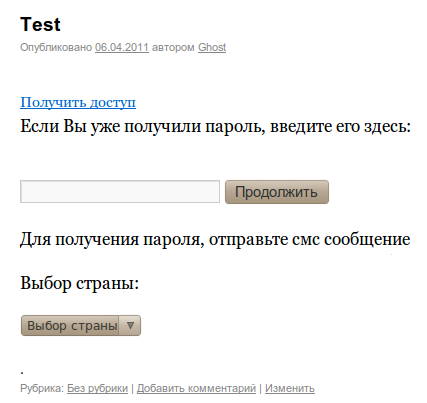
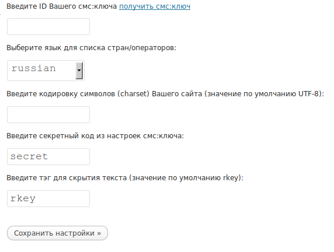

SmsCoin - модуль смс:ключ оплата скрытого текста (для WordPress)
посредством отправки смс-сообщения, на основе услуги смс:ключ
(Локальная версия).
Вся информация, предоставленная в рамках данного программного продукта,
принадлежит проекту SmsCoin и его владельцам.
Данный программный продукт предназначен для участников партнерской программы
сайта http://smscoin.com/ при использовании услуги СМС:КЛЮЧ. Использование
программного продукта или его части вне обозначеной партнерской программы
является нарушением прав компании и преследуется в соответствии с действующим
законодательством.
SmsCoin не несет никакой ответственности
за функционирование данного программного обеспечения,
а также за потерю прибыли, в том числе упущенную выгоду, и/или убытки,
связанные с использованием данного программного обеспечения.
|
- Работает только на версии PHP 5.
- Для использования данного модуля требуется регистрация на сайте http://smscoin.com,
а также подключение к услуге смс:ключ.
- Регистрация и подключение к услуге абсолютно бесплатны.
Принцип работы модуля:
Этот плагин позволяет обеспечить платный доступ к чему-либо на вашем сайте.
В ответ на присланное смс-сообщение пользователю приходит короткий текстовый пароль (ключ),
с помощью которого он может получить доступ к тому, что вы закроете этим ключом.
Вы сами решаете сколько раз или как долго можно использовать пароль для доступа.
В текст страницы или поста Вы добавляете тег : [rkey] скрытый текст [/rkey].
Для просмотра скрытого между тегами текста, пользователю потребуется послать смс на короткий
номер в выбранной им стране. В ответном смс сообщении он получит код доступа, для просмотра скрытого текста.
Пример:

Рекомендуется не использовать один модуль несколько раз на одной и той же странице.
|
Установка:
- Скопируйте папку "smscoin_rkey" из архива в папку: wp-content/plugins
- Зайдите в Админ панель Вашего "WordPress"-а, в разделе Plugins,
Вы увидите "SmsCoin R-Key", нажмите активировать.
- Выставьте права на запись файлу
/wp-content/plugins/smscoin_rkey/data/local.js
- Зайдите в меню "SmsCoin R-Key" выберите пункт "Настройки", и
следуйте указаниям для конфигурации плагина.
Пример:

Установка завершена!
Настройка услуги смс:ключ:
- В панели управления, на сайте smscoin.com, зайдите в настройки услуги смс:ключ
- Активируйте опцию: Передача паролей.
- Укажите Адрес обработчика:
http://yoursite.com/wp-content/plugins/smscoin_rkey/result_325.php
- Укажите Пароль для подписи запроса на обработчик.
Удаление:
- Зайдите в Админ панель Вашего "WordPress"-а, в разделе Plugins,
Вы увидите "SmsCoin R-Key", нажмите деактивировать.
- Удалите папку wp-content/plugins/smscoin_rkey
Модуль удален.
|